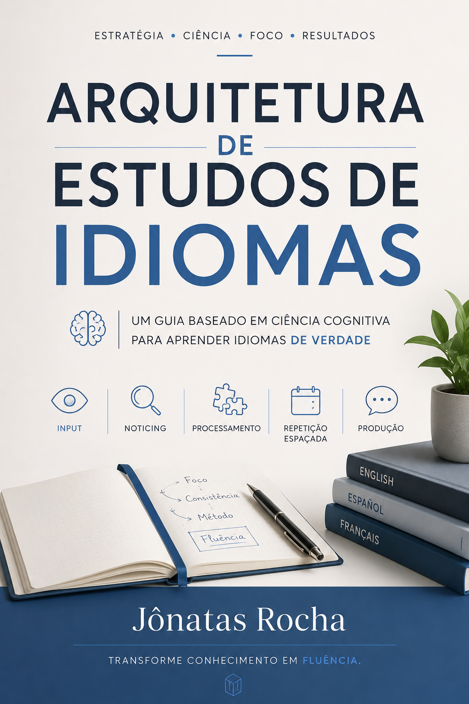

Compreender frases em aplicativos, vídeos ou leituras não significa que sua memória consiga recuperar essas estruturas durante a fala real. O problema não é inteligência, talento ou falta de dedicação. É organização do estudo.
Baseado em princípios de carga cognitiva, recuperação ativa e percepção estrutural da linguagem.

Fundação de estudos
Entregável via Hotmart
Ambientes digitais e imersão
Kit de Aceleração Prática
A falha na produção verbal ocorre devido a uma assimetria estrutural na forma como a atenção é direcionada durante o estudo silencioso de mesa.
Você sabe que já viu aquilo antes. Mas a estrutura não aparece.
A memória de trabalho possui limite.
Quando vocabulário, gramática, tradução mental e autocorreção acontecem simultaneamente, o processamento entra em saturação.
Conclusão: Nem sempre o problema é esforço insuficiente. Às vezes o problema é excesso de carga ao mesmo tempo.
O que a obra executa:
O livro apresenta uma arquitetura prática para reduzir atrito cognitivo e melhorar recuperação ativa da linguagem.
Pilares Operacionais Dedicados
• percepção ativa da estrutura / segmentação em blocos menores
• recuperação ativa / repetição espaçada manual
• redução de carga extrínseca / organização sustentável
O objetivo não é aumentar infinitamente o tempo de estudo. O objetivo é tornar o esforço mais utilizável.
A retenção melhora quando o cérebro precisa recuperar a estrutura sem apoio visual constante.
Muitos estudantes passam anos alternando entre aplicativos, vídeos, métodos, cronogramas, cursos e técnicas diferentes. Ainda assim, continuam travando ao tentar falar o idioma espontaneamente.
Frequentemente, o problema não está na ausência de contato. Está na forma como a atenção foi organizada durante o estudo.
Estudante autodidata e analista focado no desenvolvimento de rotinas estratégicas e protocolos operacionais aplicados ao aprendizado de idiomas. Dedica-se a investigar como os limites de atenção seletiva, a memória de trabalho e a gestão de carga cognitiva determinam a retenção e a fluidez na fala ativa, buscando aplicar os achados da ciência cognitiva de forma prática no cotidiano.
É o criador deste ecossistema modular de estudos, cujo objetivo é substituir abordagens comerciais genéricas por uma engenharia de precisão baseada em dados de desempenho individuais, devolvendo ao estudante a soberania autodidata.
Escolha o nível de sustentação para sua rotina
O manual completo, fichas de auditoria, infográficos, logs e o prompt mestre.
Tudo do essencial, além de áudios práticos, laboratório de prompts, slides em apresentação e templates para Notion e Obsidian.
O objetivo deste material não é transformar estudo em entretenimento constante. É ajudar você a construir uma rotina cognitivamente sustentável, organizada e utilizável no longo prazo.